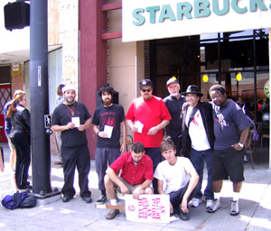
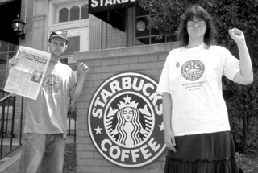

Submitted on Sat, 06/16/2007 - 3:05am
Starbucks to Pay Undisclosed Amount and Offer Reinstatement
Chicago, IL (06/14/2007)- Starbucks has agreed to reinstate Chicago barista Gloria Sykes and pay her a confidential amount to settle charges filed with the National Labor Relations Board earlier this year. Starbucks fired Sykes after she told her store manager that employees would reach out to the IWW Starbucks Workers Union (SWU) if management did not address age discrimination and work schedule issues. The Starbucks manager responded in clear violation of federal law that any talk of the Union was prohibited and would result in termination. Ms. Sykes, 55, was undeterred and subsequently did join the SWU [StarbucksUnion.org].
Submitted on Mon, 06/11/2007 - 3:21am
By John Sterlicchi in Florida
Thursday June 7, 2007
Guardian Unlimited
Which Starbucks will step forward in a Manhattan court room next month? Will it be the greener than grass, consistent winner of wonderful-employer accolades on both sides of the Atlantic, or the union-busting, low-wage bully some ex-employees allege?
An industrial relations case against Starbucks has been brought by a US federal agency, the National Labor Relations Board, which has found probable cause that the company violated the rights of its employees, who were trying to organise a union at the company's New York City outlets.
Read more . . .
Submitted on Thu, 05/31/2007 - 11:04am
By Micheal Johnston - Grand Valley Labor News, June 2007
They’re twenty-somethings, idealistic, motivated and creative. In Grand Rapids they’ve been raised in anti-union, narrowly conservative and hyper-religious West Michigan. Until recently they viewed unions with hostility or as dinosaurs awaiting extinction. Most were indifferent to unions until now.
Across the globe, across the U.S., and in West Michigan they are shaking up the moribund labor movement and the Starbucks world of overpriced coffee, underpaid workers and hypocritical marketing.
Baristas at the Wealthy Street Starbucks, in East Grand Rapids, announced May 17 their membership in the IWW Starbucks Workers Union (www.starbucksunion.org), becoming the first store in Michigan to declare union membership at the world’s largest coffee chain.
Submitted on Wed, 05/30/2007 - 2:31am
May 30, 2007
Friends of the Starbucks Workers Union:
Thank you! Bowing to grassroots pressure from the Industrial Workers of the World and its allies, Starbucks has notified barista Christina Rosevear that it has decided not to fire her. Christina faced imminent termination five days ago at a scheduled meeting with her store manager who warned that she had abandoned her job after she took doctor-ordered leave for a back ailment related to her pregnancy. The manager had also been cutting Christina's hours in retaliation for taking time off to deal with severe morning sickness.
Tired of distressed sleepless nights and the fear of being fired, Christina decided to join the IWW Starbucks Workers Union and fight back for herself, her nineteen-month old daughter, and her future child. You responded to her call for solidarity.
Submitted on Fri, 05/25/2007 - 11:48am
Sisters and Brothers:
Starbucks barista Christina Rosevear and her 19 month-old daughter need your help now. Christina recently learned that she was pregnant with her second child and she promptly informed the store manager at the Northern California Starbucks where she works. Instead of being considerate of Christina's pregnancy, Starbucks began to discriminate against her.
Christina developed severe morning sickness and needed to take the occasional day off. On several occasions after she took a day off, she'd find that her work hours would be cut the following week depriving her of much needed income. Sometimes she'd receive as little as four hours of work per week! As a single mom and a low-wage worker, Christina can't afford such a dramatic pay cut. Things only got worse and now Christina is facing the prospect of an unjust termination.
Christina's doctor ordered her to take time off work to deal with a pregnancy-related back ailment that may be connected to heavy lifting at Starbucks. When Christina was ready to come back to work, the store manager warned that he might fire her for being away from the job. Christina has a meeting coming up with the manager and it's critical that Starbucks hear from people of conscience now that discriminating against someone for a pregnancy or illness is wrong.
Instead of being brushed under the rug like so many retail workers are everyday, Christina has chosen to fight back and has joined the Starbucks Workers Union [StarbucksUnion.org]. In her own words, "I need some help because I refuse to let a big corporation like Starbucks push me around."
Please lend a hand and stand by Christina as she fights this abuse from Starbucks: Take a moment to participate in this e-mail action demanding that Starbucks not fire Christina and immediately cease discriminating against her:
http://starbucksunion.org/node/1641